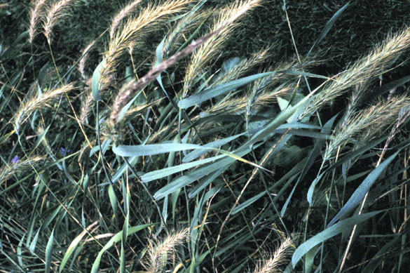
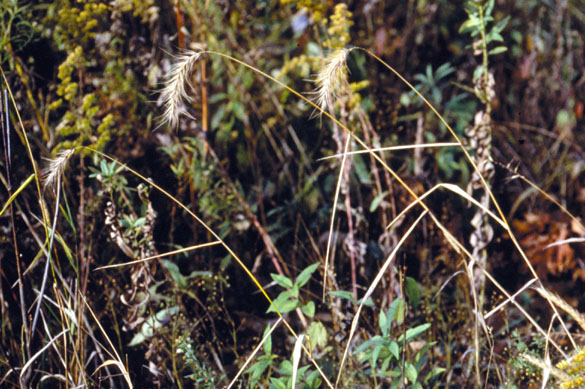
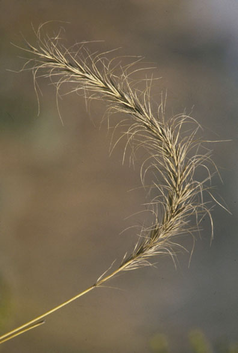

Elymus Canadensis
Family: Poaceae
Canada/Nodding Wild Rye
Swink/Wilhelm #4


Click to view larger photo
FLOWERING: July
SEED TIMING: September to mid-October
HABITAT: Dry to moist prairie. Open savanna
DIAGNOSTIC FEATURES: 3 to 4 feet high. Stout stem. Spear-like leaf blades that clasp stem. Dense cylindrical spikes, usually curving or nodding. Long curved awns give spike a bushy look.
TO PICK: Seed spike should have dry, straw-colored appearance. It will pull off easily, and sometimes breaks apart when fully ripened.